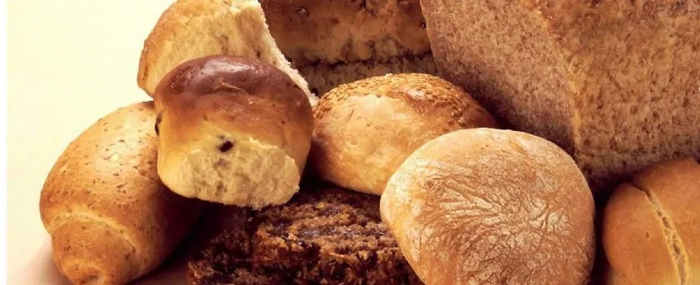
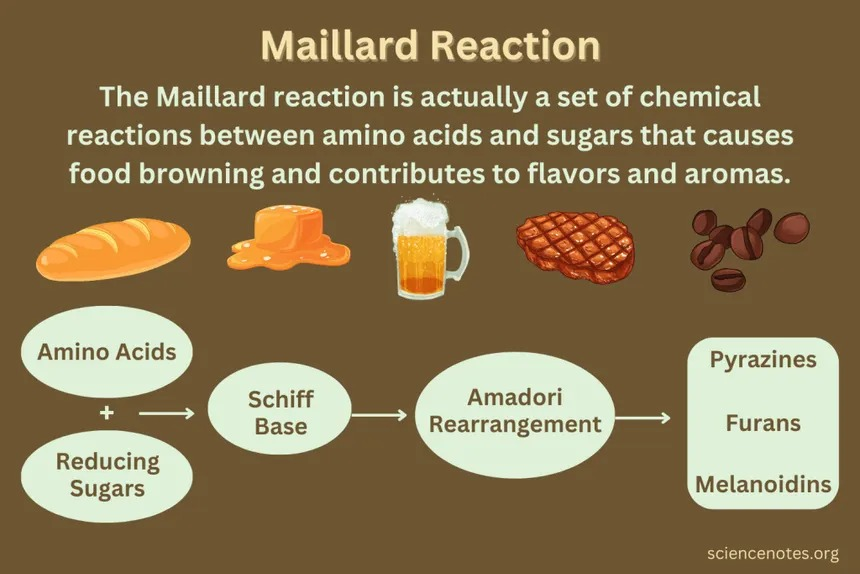
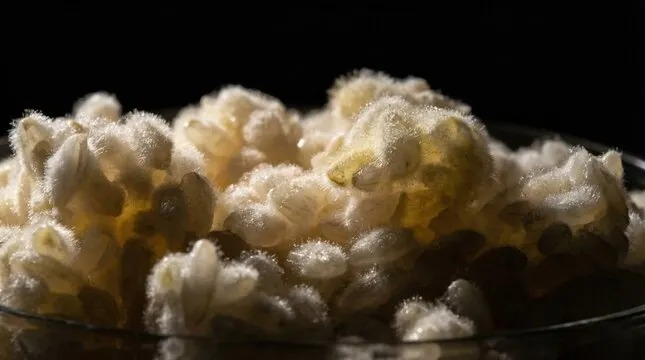

R1
Reactia Maillard
Ajută la formarea culorii și a aromei în paine, cartofi prajiti sau alte produse bine rumenite.
Vezi detalii și exemple →Aici sunt explicate procesele care schimba gustul, culoarea, textura sau mirosul alimentelor, cu exemple simple și ușor de recunoscut.
Ajută la formarea culorii și a aromei în paine, cartofi prajiti sau alte produse bine rumenite.
Vezi detalii și exemple →Apare atunci când zaharurile sunt încălzite și încep să își schimbe culoarea și gustul.
Vezi detalii și exemple →Proteinele se modifica la încălzire sau acidifiere, iar acest lucru se observa bine la ou sau lapte.
Vezi detalii și exemple →Microorganismele transforma anumite substanțe și produc schimbări de gust, miros și textura.
Vezi detalii și exemple →Contactul cu oxigenul poate duce la schimbări de culoare sau la degradarea unor grașimi și arome.
Vezi detalii și exemple →Este procesul prin care doua lichide diferite, cum sunt apa și uleiul, pot forma un amestec mai stabil.
Vezi detalii și exemple →Aluatul crește prin fermentatie, iar la coacere apare culoarea rumenă de la suprafața.
La încălzire, albușul devine alb și solid pentru că proteinele își schimba structura.
După contactul cu aerul, suprafața lui se închide la culoare din cauza oxidării enzimatice.
Este un exemplu simplu de emulsie stabilă între apa și ulei.
Imaginile completeaza reactiile descrise mai sus prin exemple vizuale despre fermentatie, rumenire si efectul caldurii.

Painea arata foarte bine legatura dintre dospire, retinerea gazelor si transformarile aparute in cuptor.

Diagrama explica pe scurt cum aminoacizii si zaharurile reducatoare duc la compusi colorati si arome noi.

Popcornul este un exemplu vizibil de crestere brusca a presiunii interne si de reorganizare a amidonului.